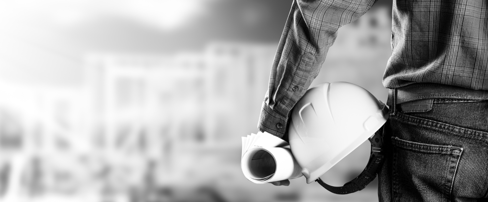
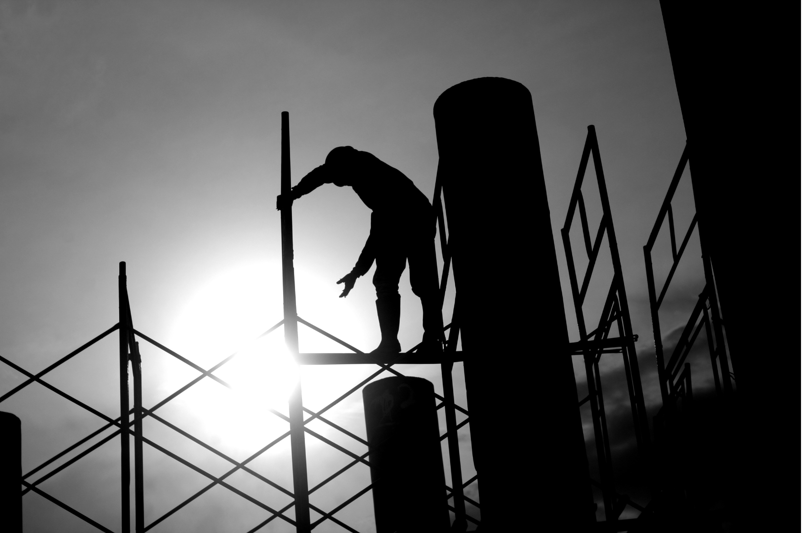

Nossa história
A MRV é a maior construtora da América Latina e investe permanentemente, no aprimoramento e na gestão da qualidade de seus produtos. Ao longo de sua existência, a empresa sempre esteve sintonizada com o mercado e suas melhores práticas, além de priorizar sempre as necessidades de seus clientes. Assim, a MRV conquistou duas importantes certificações em 2014: a ISO 14.001, que estabelece padrões rigorosos na gestão de meio ambiente e a OHSAS 18.001, que estabelece padrões rígidos na gestão de segurança e saúde das empresas.
Desde 1979 no mercado imobiliário, a MRV é a maior construtora do país no segmento de imóveis para a classe média e média baixa, além de ser a única que oferece casas e apartamentos em mais de 160 cidades do Brasil.
A MRV é a única construtora presente em 160 cidades brasileiras. Hoje, é líder no mercado de construção civil no segmento de imóveis residenciais e já possui mais de 4000 mil casas e apartamentos lançados em 22 estados brasileiros e no Distrito Federal. Além de construir empreendimentos direcionados à classe média, que possibilita a realização do sonho da casa própria a milhares de brasileiros, a empresa gera seis mil postos de trabalho por ano nos locais em que atua.